Copyright © 2012
First edition published in 2014
Second edition published in 2026
Written in Austin, Texas
Illustrated in Melbourne, Australia
This book is presented subject to the condition that it shall not, by way of trade or otherwise, be lent, re-sold, hired out, read, looked at, printed and then placed on a bookshelf, or otherwise circulated unless the reader pledges to stop watching sub-par television shows.Published by mobeets.
This guide to the language of pet Neurons was first published anonymously fourteen years ago, in 2012. Though its author has remained anonymous, we find in this now-classic text the following clues to his identity: He owns a copy of Dayan and Abbott’s Theoretical Neuroscience; his places of residence have seen multiple large shipments sent from China. He has a familiarity with stereotypical Mexican headware, a predilection for the music of Archure, a propensity to reference Maya Angelou. He owns a dog.
Despite these many clues we find ourselves with very few suspects. The Boogie Beep Man of Christchurch, New Zealand has denied all accusations that he might have had something to do with the authorship of this guide. Michael J. Frayn FRSL, in the Epilogue to his book Speak After the Beep Revisited: Studies in the Art of Communicating with Avatars of Myself, mentions that “…and I have been both disgusted and exhausted by the volume of email sent to me under the misconception that I was the author of some obscure educational comic involving a cartoon neuron and a magician.”
Magician, indeed. Perhaps most perplexingly, there appears to be no record either on the Web or even in the International Magician’s Registry of anyone performing as a magician under the stage name of “The Man Who Speaks in Beeps.” Yet as fans of this guide will surely appreciate, if the anonymous author is not a magician then he is surely an artist: No one, in the fourteen years following the publication of Speak Neuron, has written quite so eloquently on the subject of understanding the language of a Neuron pet.
In this second edition of Speak Neuron I have taken the liberty of updating the text for the benefit of the modern reader. In its brief history the book has had its successes but it has also seen its fair share of criticism. Some have pointed out that the author had an apparent prejudice against Neurons without eyes—that is, by depicting exclusively Neurons who encode the visual world. (“Where are all the Neurons with ears, or noses, or tongues?” one might say.) But such complaints irritate me in their irrelevance; the methods of understanding one’s Neuron pet put forth in this book are hardly concerned with the particulars of the Neuron’s response field.
Perhaps the most notable criticism has come from Henry “Hank” Terry of The New Yorker, who balked at the author’s claim in the opening chapters of the guide that he had written it with the anti-mathematically-inclined Neuron pet owner in mind, pointing out in particular the section regarding ROC curves. And so, in order to guarantee that this second edition is at least slightly more accessible to the audience for whom the book was apparently intended, some adjustments have been made by my own liberty:
The latter change has been made so that the reader may, if he so chooses, ignore the more technical details and read the text as it was intended: as a guide and not as a textbook. The majority of the mathematical content—especially the example calculations that the author performs—has been quarantined to the back of the book, just before the glossary. The references to this section in the book can be found in brackets, e.g. [1].
This content has been relocated rather than removed so that the book may still appeal to that minority still willing to perform arithmetic and understand graphs. However, in some sections (notably the section regarding discrimination) such mathematical quarantining was not feasible, as relocating the equations would seriously diminish the clarity of the story. I hope that these minor equations do not intimidate you as they appear to have intimidated Hank Terry.
Finally, please note that at times the original author reveals the extremely unsympathetic attitude with which Neuron pet owners of the 2010’s treated their supposedly beloved pets. I have allowed these moments to remain in this edition purely for their historical interest.
And with these humble words, dear reader, I leave you to your reading—however momentarily. I hope that you may enjoy this second edition as much as I have, but to no greater extent than you did the first.
-Wilayanuk Tamachandran (WT), July 2026
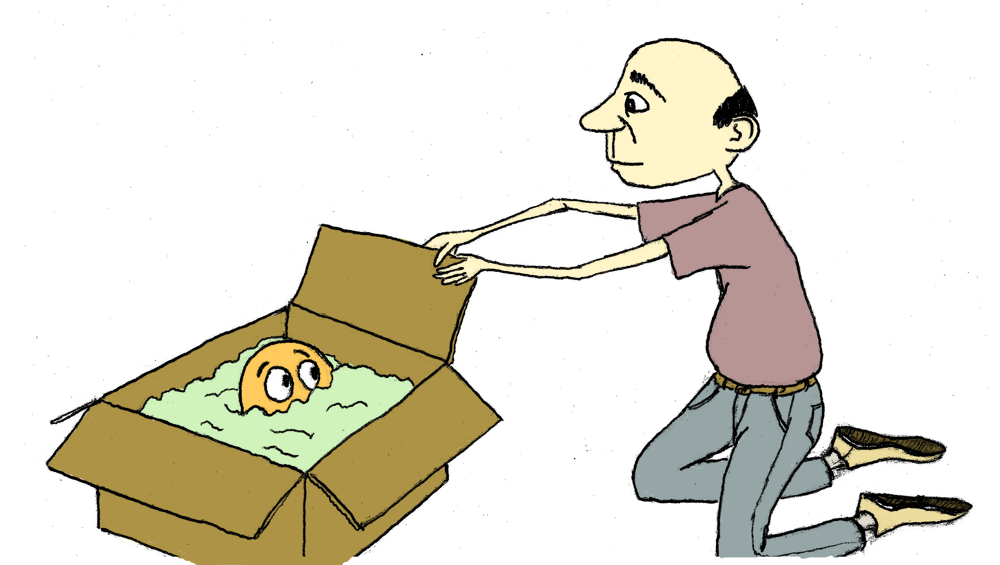
One morning a strange package arrived for me in the mail—the labels said it was from China and that it should remain refrigerated. I opened it up hastily, and inside I found a strange teardrop-shaped guy with tree roots coming out of his rear end.
It was my brand new pet Neuron! I’d been waiting for this moment. I’d always wanted a pet, and I’d heard that Neurons were the computational beings responsible for human intelligence and consciousness. What good times the two of us would surely have! Two competent beings living in harmony, each with an ability to communicate our deepest, most intellectual thoughts…It would be a perfect match.
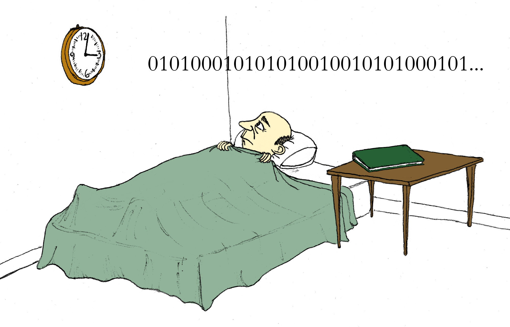
And yet, I soon realized that having a pet Neuron was not entirely what I’d imagined. He seemed to be speaking in some sort of code. He beeped*. Continuously, sometimes, and then nothing for a bit, and then he’d beep some more. Beeping, each time with a glassy look in his eyes, almost as if he wasn’t aware of the noise he was making.
* Neuroscientists today say that Neurons “spike,” but if you put a microphone to a Neuron you will hear that “beep” is, as the author suggests, a more precise onomatopoeia than “spike” for the sound of a chattering Neuron. -WT
I became very sensitive to the incessant noise of my new friend; the endless patterns of beeps kept me up at night. I tried making wild gestures at my Neuron but he still wouldn’t stop beeping. Eventually I grew desperate and bought the closest thing I could find to a Neuron handbook, Dayan and Abbott’s Theoretical Neuroscience, and there I searched for the answers to the most fundamental questions:
But the book was filled with equations and terminology that were practically as cryptic to me as my Neuron’s beeps. Without some serious study, I realized, I might never form a positive relationship with my new pet.
Thankfully, I persevered. I’ve now had quite a few pet Neurons and I’ve learned a few things about Neuron-speak along the way. And yet, I’ve realized, people all around the world must surely be going through the same problems that I had, people with pet Neurons of their own and a now-perpetual look of confusion on their faces.
This book will not explain how to speak fluent Neuron, but it will hopefully explain the basic approach. I won’t show many equations, but quite often I’ve realized that some simple experiments and graphs really are the best way to understand a Neuron. I will do my best to explain how a neuroscientist studies these strange creatures so that you, as pet owner, might gain some insight into the bizarre world of Neuron-speak without having to first earn a degree in neuroscience.
By the way, as for those three questions I first asked of my Neuron: The answer to my last question is, He never really stops. The answer to the question before is that you’ll just have to get over it.
And as for the first question? No one actually knows. All I really know is that Neurons beep at some things more than others. But that question, as you’ll see, is the key to getting to know your new pet.
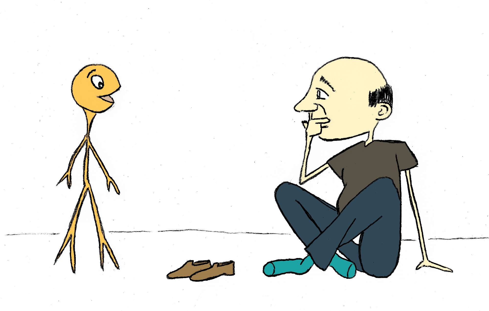
All of my Neuron’s beeps really overwhelmed me at first. Why did he just keep talking if he knew I couldn’t understand him? We’d go out for dinner sometimes, and I always felt so awkward. He’d just talk and talk and I wouldn’t say a word.
However, I soon noticed that while my Neuron never said anything interesting in English, he did seem to be communicating something. Clearly the beeps were not meant to be understood by me directly, but I had faith that my Neuron was doing more than just randomly beeping for no good reason at all.
I tried showing my Neuron my favorite pair of shoes. Then I showed him the weirdest face I knew how to make. Maybe it was my imagination but I thought I noticed an apparent mood swing in his beeps when I took away the shoes and started making the weird face. This got me thinking: What if I could show my Neuron lots of different things, and observe whether those things made my Neuron beep more often, or less?
I would need to design an experiment, I realized, to keep things in order. If I wanted to see whether my Neuron was beeping more or less I would need to start counting his beeps. But what is a beep, really?
After a bit of observation—and after a few re-reads of the first chapter of my neuroscience textbook—it became apparent that each Neuron beep is essentially identical to the others. This means that if a Neuron is trying to communicate something with us humans then the only thing that changes in his speech is how frequently he beeps. Call it his beep rate, spike rate—whatever, it doesn’t matter. The only important thing to understand is that a Neuron communicates thoughts in an entirely different way than we do.
Each word a human says means something different, and it doooeesssn’t…..mattttter………….whenyousay…each word. But a Neuron only knows the word “BEEP,” and so if he wants to communicate something he can only vary when or how much he beeps.
But if a Neuron’s beeps are identical, wouldn’t it be possible that my Neuron is speaking in silences, too? Instead of my Neuron saying “BEEP…BEEPBEEP……BEEP,” for example, maybe he’s actually saying “BEEP-SILENCE-BEEP-BEEP-SILENCE-SILENCE-BEEP.” Truly, as I once read in a famous book on Neurons, “Silence speaks as well as words.”*
* The source of this quote is unknown. We believe that the author may have invented this quote himself to support his point. -WT
So a Neuron knows two words, BEEP and SILENCE. We can transcribe Neuron-speak, then, as a string of zeros and ones. A “1” means that the Neuron beeped at a certain time, and a “0” means he didn’t. I can now write “BEEP-SILENCE-BEEP-BEEP-SILENCE-SILENCE-BEEP” as “1011001.” It turns out that a lot of people, including dear old Dayan and Abbott from my textbook, like to transcribe Neuron-speak in this binary* form.
* A binary alphabet allows one to distinguish between two different things—in this case, between a BEEP and a SILENCE. Morse code, on the other hand, could be represented as a quaternary language: it lets one distinguish between four different sounds—the characters “dah” and “dit” and two types of silences. -WT
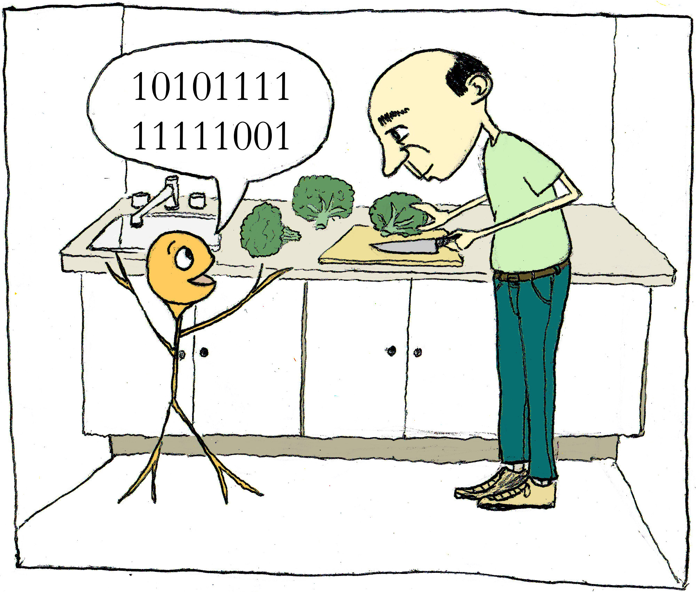
Shortly after my first hunch that my Neuron could be beeping at some things more than others, I had another stroke of insight. I was hanging out with my Neuron—I found a little card in the box he came in that said his name was “Envelope”—and I was surely wondering how in the world I was ever going to become friends with an opinionated pet with a two-word vocabulary.
It was dinner time, and I was about to cook some veggies. Envelope was sitting on the kitchen counter beeping at what seemed to be his normal rate, but then I brought out a piece of green broccoli and he just started going mad. What I mean to say is: He started beeping more than ever before!
I was confused at first…I put down the broccoli and ran over to him, stroking his dendrites*. “Envelope, what’s wrong?” No response. In fact, the moment I’d set down the broccoli he resumed beeping normally. But once I went back to the counter, picked up the broccoli and started chopping it, Envelope again went nuts!
* Dendrites are like a Neuron’s hair—only dendrites also conduct electricity. A Neuron is in fact deaf to the beeping of any other Neuron unless he touches a dendrite to the other Neuron’s leg, aka axon. -WT
I decided at first to just ignore him (I was kind of angry with him that day; earlier I was trying to listen to my favorite Archure song and Envelope had insisted on sitting in my lap and beeping right in my ear the entire time), but I wasn’t in the best mood so I eventually decided to sort of taunt him with the broccoli. I chopped the broccoli into smaller and smaller pieces, and each time I made the broccoli smaller I made sure to show Envelope how tiny his precious broccoli was getting: “How about that, you strange Neuron!” I yelled.
The really strange thing, though, was that Envelope’s frantic beeping slowed regularly as I made the broccoli smaller and smaller. In the end, when the broccoli was finally torn to crumbs, Envelope was beeping at his normal rate again, apparently unfazed by all my antics.
I felt kind of stupid having wasted a huge chunk of produce teasing a Neuron, but eventually I calmed down and picked up another piece of broccoli to start chopping for dinner. Envelope could see it, though, and he started beeping madly again! And that’s when it finally hit me: Envelope had something to say about broccoli.
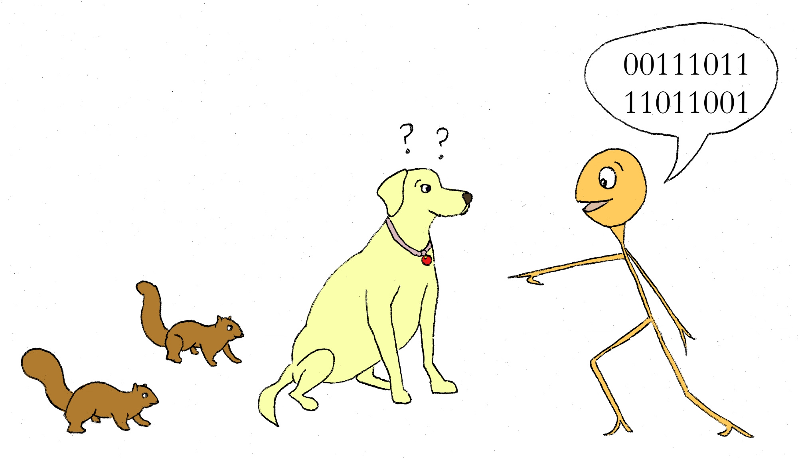
After consulting my neuroscience textbook again, Envelope’s antics made a whole lot more sense. According to the textbook there are lots of stimuli that might make a Neuron beep more than normal. It might be something abstract, like differential equations; it might be something incredibly specific, like the expression on your face when you watch television. It might be broccoli.
Neurons are very dull creatures in this way: Only one dimension of life seems to interest them. Dayan and Abbott call this dimension the Neuron’s response field or receptive field, and finding a Neuron’s response field is apparently the first step to learning more about him. In other words, I was on the right track!
So each Neuron, though he may be a very talkative creature in general, will have a response field—a thing that regularly varies his beeping based on how much of it is in his environment. If that property is broccoli-ness, as it seems to be for Envelope, he will tend to beep more when he sees a stimulus containing a high level of broccoli-ness.
But what is a Neuron saying about his response field? If we were to borrow an information theorist’s vocabulary, we might say that a Neuron’s beeps are communicating information that is encoded* in the Neuron’s beeping language. In simpler words, we’d just say that a Neuron’s beeps contain information about the world around them, in a form we may understand or not. As pet Neuron owners we must learn how to decode our Neuron’s beeps in order to uncover this information.
* Again, Morse code comes to mind. Each letter is made of a predictable series of dits and dahs, but until one knows how to decode those dits and dahs it just sounds like noise. -WT
The interesting thing is that dogs and cats are talkative creatures, too, but for some reason we don’t think of a dog or cat as encoding information when they bark or meow. Truthfully, a dog’s barks probably encode just as much information about his environment as a Neuron’s beeps. But since my brain is full of Neurons and not dogs, I’m going to assume that decoding a Neuron’s beeping is a much more worthwhile task than decoding a dog’s barking. Plus, my dog only seems to encode information relating to the capacity of his stomach and the whereabouts of squirrels.
I’ve read that if you order your Neurons from the right place, you can get Neurons who beep more at straight lines, or at anything that moves to the left. And to a real neuroscientist, the dream Neuron is supposedly one who beeps the most at your grandmother—the so-called “Grandmother Neuron.”* Supposedly, somewhere in the brain there’s a Neuron who will beep more than usual only if he sees your grandmother: It doesn’t matter what she’s wearing, or if she’s baking you cookies, or anything like that. She can be sitting or standing and this Neuron just doesn’t care. Show him your grandma, and he’ll beep like mad.
* If you, reader, ever happen upon such a Grandmother Neuron, please send him directly to the Editor’s brother at 0109 Mandler Hall, 9500 Gilman Drive, La Jolla, CA 92093-0109. -WT
After my broccoli dinner I decided that just because Envelope beeps more when he sees broccoli, it doesn’t mean that he likes broccoli. It doesn’t even mean that he prefers it! How can I know that he isn’t merely annoyed by all my stupid broccoli? And as tempting as it is, I don’t feel comfortable making any statements about a Neuron’s opinion towards the things he beeps at; all I can really say is whether he’s beeping more or less than usual.
But who really cares what Envelope actually wants to tell me? Ultimately, a Neuron’s beeps might contain useful information about the world around us—whether that’s the Neuron’s intent or not. Maybe this sounds inconsiderate. But consider the following hypothetical conversation (I’ll translate the beeps to English for your sake):
YOU: Hey Neuron, what’s up?
NEURON: Hello. I went to the grocery store yesterday. Before the grocery store exploded I bought some green beans.Neurons, as you might imagine, come from a culture very unlike human culture. In the conversation above the Neuron only wanted you to know that he bought some green beans; but you, on the other hand, were presumably much more interested in learning that the grocery store exploded. On that note, let’s move forward with the awareness that what we learn about our Neurons’ beeps will, unfortunately, not necessarily be what they intend to tell us at all.
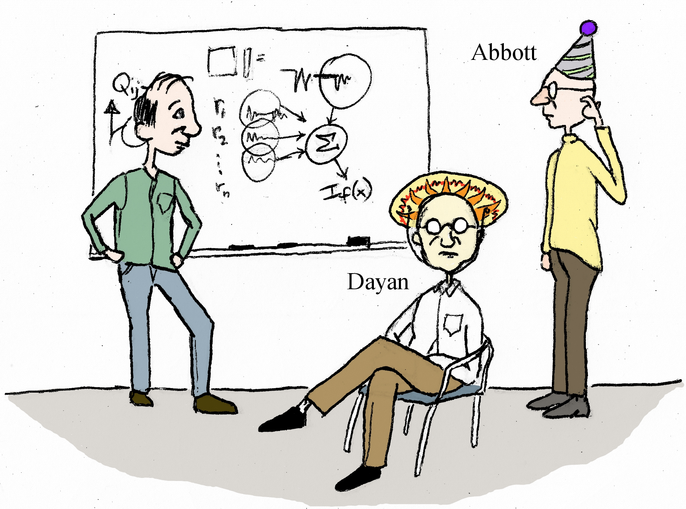
So, I thought, a Neuron can only adjust the times that he beeps and not the style of the beeps themselves. Then that means I can record a Neuron’s speech either by noting the exact times he decides to beep (this will require a very expensive digital watch) or the number of times he beeps in a fixed amount of time (this only requires that I know how to count very quickly, which I do)*.
* Given that most Neurons beep multiple times in a second, one must count very quickly indeed. -WT
In the back of my textbook there were some photos of Dayan, Abbott, and their friends. According to those photos, most people who study Neurons wear hats. First there’s the rate coding hat, and when you wear that hat it means you only care about how many times your Neurons beep. But if you prefer to record the precise beep times of your Neurons you wear a sombrero*. Since counting sounded easier than taking precise time measurements (and my watch isn’t digital, anyway) I decided to buy myself a rate coding hat.
* A sombrero is referred to by professional neural decoders today as a temporal coding hat. -WT
When my new rate coding hat arrived in the mail I was pretty excited. But I was surprised to see that my new hat came with a caution notice. This is what it said:
CAUTION: By wearing this rate coding hat, you announce to the world that you prefer to count the number of times a Neuron [beeps]. However, the wearer of this hat does not contend that a Neuron only communicates with the number of times he [beeps]; rather, by deciding to ignore a Neuron’s specific [beep]-arrival times one makes an assumption to help simplify a Neuron-speak translation. It may seem optimistic (or ridiculous) to assume that just by counting beeps one can learn anything about a Neuron, but what else is one to do with his Neuron? Buy a fancier watch and put on a [sombrero]? Try to teach him English?
The note, I think, is trying to say that the hat one wears says nothing about what your Neuron is doing; a hat is worn only to make it clear what perspective the hat-wearer is taking when he tries to make more sense out of his Neuron’s endless stream of beeps. Wearing a hat is just an assumption—the caution notice encouraged me to make my assumption explicit: From now on, all I care about a Neuron’s speech is how many beeps it contains in a fixed amount of time.
Once I put on that rate coding hat, I think Envelope understood that I meant business. Well, not business—I should say friendship. But I didn’t worry; I think that most Neurons should certainly respect the fact that in order to connect with a human they must be experimented upon in order to be understood.
Previously I mentioned that if a Neuron says “BEEP-SILENCE-BEEP-SILENCE-BEEP-BEEP-BEEP” I could transcribe this as “1010111.” But with a rate coding Hat, all I care about the sentence “BEEP-SILENCE-BEEP-SILENCE-BEEP-BEEP-BEEP” is that it contains five beeps. Nice and simple!
So I decided to spend twelve hours of my day dedicated to counting Envelope’s beeps. I carried around a clipboard and made a tally every single time Envelope beeped, which was quite a lot. Twelve hours later I’d counted 661,392 beeps. Twelve hours is 43,200 seconds, so that means Envelope beeped, on average, just over 15 times a second.
It was a crazy day, but now I knew Envelope’s average beep count. After our incident together with the broccoli I suspected that Envelope was beeping more at broccoli than at other things, but at the time I couldn’t really prove it. Now I’d be able to test that belief for sure.
The next thing I did while wearing my new hat was to show Envelope a big fat piece of broccoli over and over again and count the number of times he beeped in response. Each time I showed Envelope the broccoli I made sure to show it to him for exactly the same amount of time. And to make sure he didn’t look away, I simply tied him up to the leg of my kitchen table and fixed his head in place (a bit of twine and a square knot did the trick)*.
* The methodology described here predates AAALAC standards regarding the prevention of pain and stress in laboratory Neurons. -WT
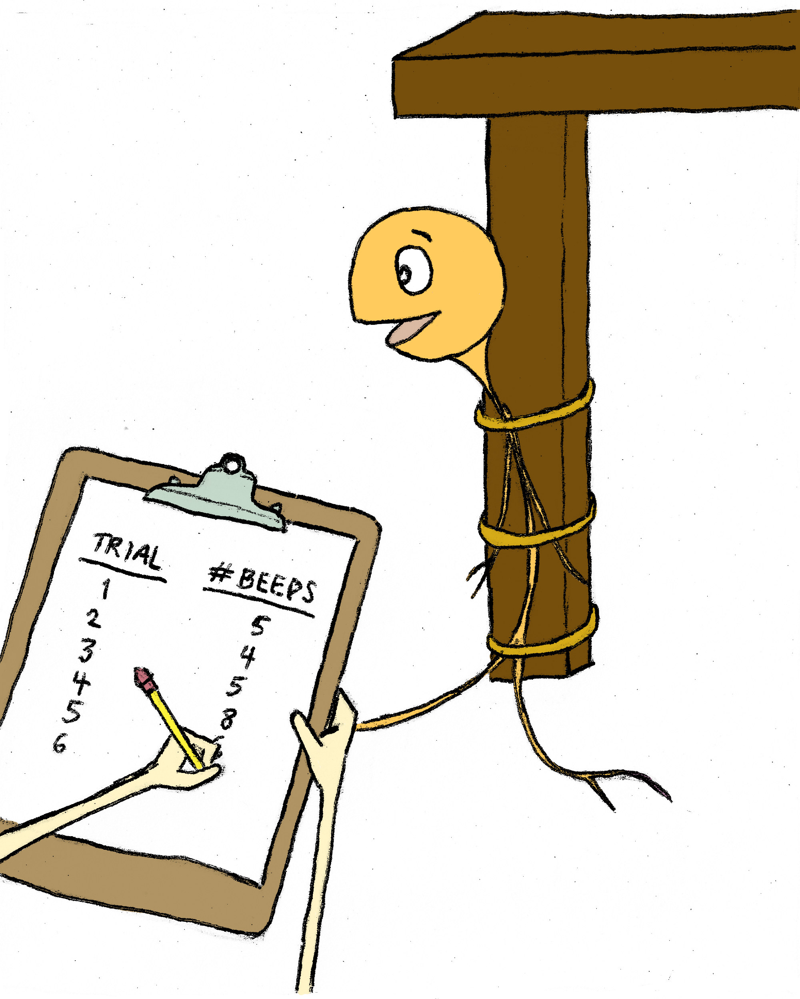
The broccoli was the stimulus in this first experiment of mine, and each time I showed my Neuron the broccoli stimulus I called it a trial. During each trial I counted the number of times my Neuron beeped in response at the sight of his broccoli. I wanted to do this right, you know, so I could rigorously prove to myself that Envelope really did beep more at broccoli.
But even before I began the trials I found myself frustrated at having to make so many more assumptions (beyond my rate coding hat) in order to start experimenting. For instance, how long should each trial last? I decided I’d show Envelope the broccoli stimulus for exactly one second, but arguably I should repeat the experiment with different trial lengths to see how that changed my results. And are Envelope’s responses really only a function of the stimulus I show him? I could never be completely sure. Despite all of my best efforts to control the experiment, there was no way to guarantee that my results would ever be as conclusive as I’d like. All I could hope for in this experiment was that I’d catch at least a faint glimpse of a pattern in Envelope’s language.
If you’d like to try my experiment at home on your own Neuron, here’s the general recipe I settled on:
The results from my first experiment left me just a bit disappointed. Neurons (unfortunately, including dear Envelope) tend to be extremely inconsistent creatures, and I certainly noticed this in the experiment’s results. I made the graph below, called a histogram, to record the number of times each response beep count occurred in my experiment. [1]
ENVELOPE’S RESPONSES TO BROCCOLI (Exp. 1) 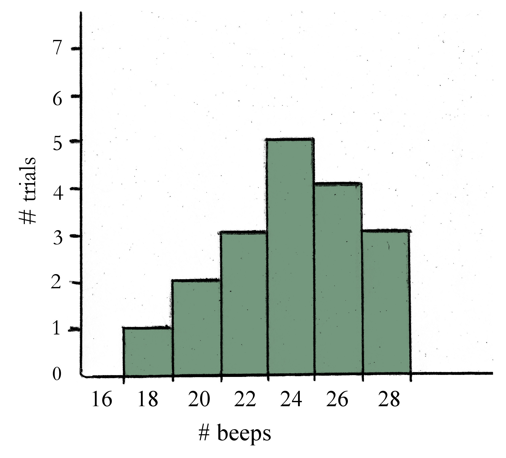
What the graph shows is that even though I showed Envelope the same stimulus in the same way on each trial, he didn’t always beep exactly the same number of times in response. Maybe some of the variation is due to all of the short-comings in my experimental design, but anyway most Neurons will change their minds from trial-to-trial for no reason at all. The great thing, though, is that there will still probably be an overall pattern to the results.*
* If the Neuron’s response beeps are extremely inconsistent, and you’re sure that you’ve found his correct response field, you might want to take him to a doctor and get him diagnosed for being “noisy,” or having a “low signal-to-noise ratio.” A large percentage of Neurons will have this incurable condition. -WT
I was expecting to learn something concrete from this experiment. Instead, all I got was a weird looking graph with a lot of variation from trial-to-trial.
But before this experiment began I’d calculated that Envelope, as he goes about his day, is beeping an average of 15 times a second. Now, from this response histogram, it’s clear that when Envelope sees broccoli he tends to beep about 9 times a second more than that average. So my first experiment wasn’t completely useless.
Despite Envelope’s inconsistent beeping in the first broccoli experiment I still wanted to go a bit further and see what else I could find. In particular, I had a hunch that big broccoli would make him beep more than small broccoli.
In the next experiment I used the same general strategy as before: I wore a rate coding hat, I showed my Neuron a stimulus, and I recorded his responses. But this time I varied the stimulus size on every trial to see how Envelope changed his beeps in response. Instead of just using the same piece of broccoli on every trial, I gathered a bucket full of variously sized broccolis.
I figured that since stimuli with a high value in a Neuron’s response field are supposed to regularly alter his beeping, then if I showed Envelope lots of different sizes of broccoli and each one of them made him beep differently, I could be pretty confident that Envelope’s beeps were encoding broccoli size.
I really felt like I was onto something, with my bucket full of broccoli and my experimental set-up and my rate coding hat. (I even had a dream that I was recognized as the world’s leading Neuron decoder.) But really, scientist or not, anyone can learn something about the world just by listening carefully to a Neuron.
So I took Envelope out of his cage* and showed him the same broccoli as I did in my first experiment, exactly the same way each time. But then, after each trial I randomly chose a broccoli of a different size (I wanted the stimulus size change to be random, so he wouldn’t know what to expect next) to use for the next trial.
* As of July 2026 it is illegal to store your Neuron in a cage in all but the following countries: Argentina, Angola, Cameroon, Ecuador, Honduras, Romania, Russia, USA. -WT
Recipe:
* The author has neglected to mention explicitly that your stimuli should be in some way represented by a numerical value. Since Envelope’s response field is broccoli size, each stimulus is seen as having a unique level of broccoli-ness, as measured by its diameter. It is unclear how the author might have suggested quantifying other response fields, such as Grandma-ness. -WT
After this experiment I had about ten trials for each stimulus, and in each trial I counted my Neuron’s beep count as his response. I made a big graph of all this data using the broccoli diameter measured in inches as the x-axis and his beep counts above his average beep count as the y-axis. Each dot in this graph is one of Envelope’s responses I measured during one trial.
ENVELOPE’S RESPONSES TO BROCCOLI SIZE (Exp. 2) 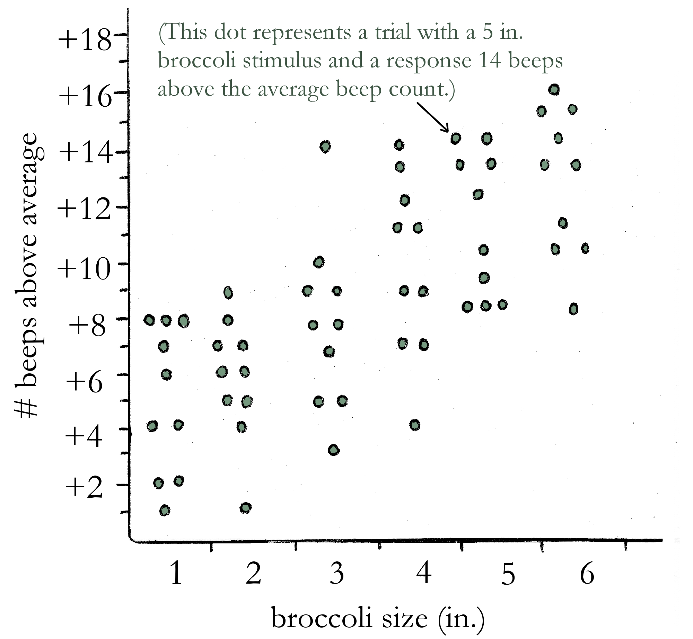
I should mention that I can’t actually claim all the credit for these experiment ideas. After all, at this point I still couldn’t decipher anything in my neuroscience textbook past about page sixteen. But why I really wanted to do this experiment was to help me build for Envelope what’s called a tuning curve for his response field.
All I needed to do now was take the average number of beeps Envelope emitted to each stimulus of my last experiment, and then draw a curve through those average values. [2]
ENVELOPE’S TUNING CURVE FOR BROCCOLI SIZE (Exp. 2) 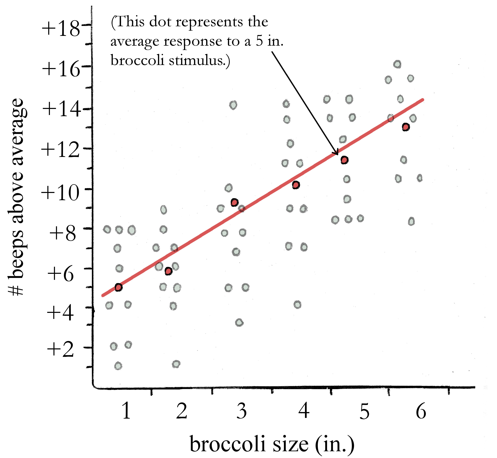
After making this tuning curve, Envelope’s beeping looked so consistently predicted by the broccoli size that it felt like I was cracking the Voynich manuscript or something. Look at that trend line! “Envelope!” I yelled. “I know why my caged Neuron beeps!”
Of course, in my excitement I was mistaken. (Possibly I was just being dramatic.) Since most Neurons only seem to have one response field each, many people assume that a Neuron beeps because his beeps are constantly encoding the magnitude of his response field in his environment.* But really, I still don’t know why my Neuron beeps. In my opinion, all I’ve really learned is a way to regularly vary his average beep rate.
* The neuro-philosopher William Langeford has used this fallacious assumption to argue that a Neuron has no free will in a paper titled “Discussions of Matter and Meaning in the Neuron” -WT
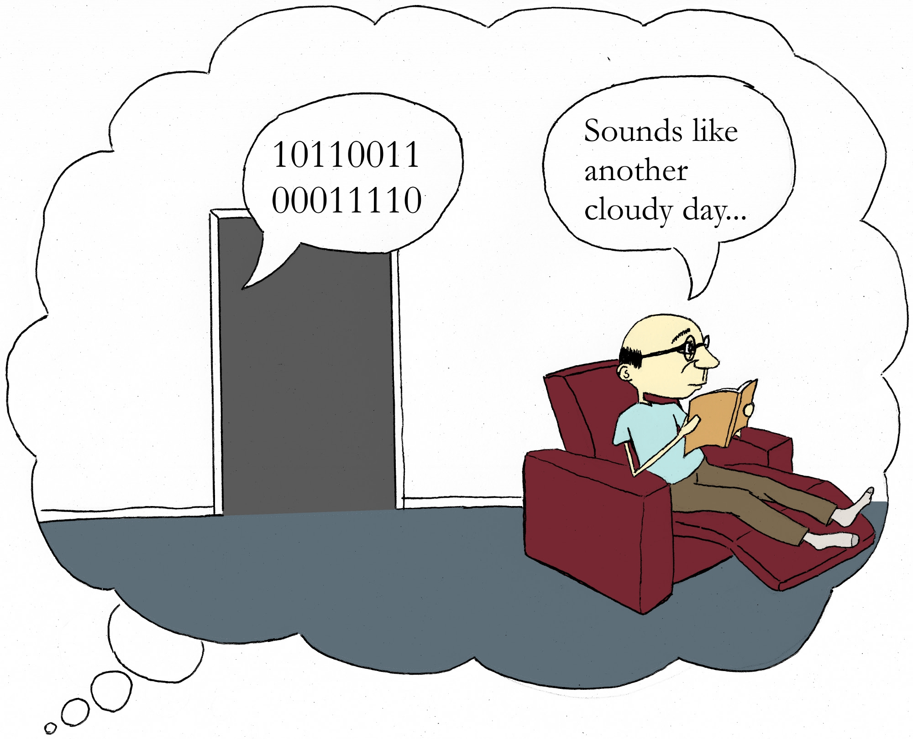
Naturally, I’m still not under the impression that Envelope necessarily cares about the size of broccoli. Neurons remind me of my jaded weatherman friend: He doesn’t care much about his weather report these days but he does still give me an accurate forecast, on average, every night at 5. But unlike with weathermen, with Neurons it’s not too wild of a hypothesis to suggest that a Neuron’s language really is merely an encoding of his response field. Just as a weather map is written to inform people about the weather, a Neuron might exist to inform others (be they other Neurons, or its human owner) about the degree of broccoli-ness in his surroundings.
After plotting Envelope’s tuning curve I could tell I was really developing as an amateur Neuron decoder. I was also a much better friend. It was at that point that I remember deciding, “Why not learn to take advantage of Envelope’s talents for my own uses?”
I had a bit of a day-dream…I imagined putting a Neuron outside my front door: I can’t see what he sees, but I can still hear what he beeps. I don’t like to leave the house when I don’t have to, so I was imagining that there must be some way that I could know when the skies outside are blue just by listening to my Neuron’s beeps. If that pet Neuron happened to have a response field of blueness, for example, then all I would need to know is the Neuron’s optimal spike count threshold. Well, that’s what my textbook called it anyway—I prefer to call it a magic beep count.
The magic beep count would give me a sort of rule to use to make guesses about the outside world. If my Neuron’s magic beep count is 2 beeps, for example, then if I heard my Neuron beep more than 2 times in a second I’d guess that there is something really blue outside (like a cloudless sky). If he beeped less than 2 times in a second I’d conclude that there is nothing very blue outside (cloudy sky).
And that’s all there is to it! The details weren’t sorted out yet, but I had a gut feeling that this idea was going to make me rich. I could be a sort of magician, wowing crowds with my ability to perceive blue skies through solid walls—all with the help of my obedient little Neuron pet.
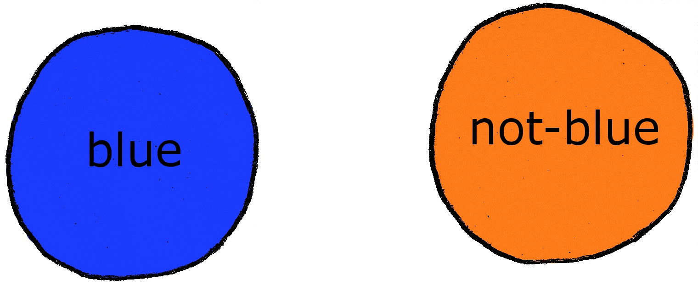
It took me five tries ordering new Neurons before I found a Neuron that seemed to beep more at blue things (I sent the others back for a refund), and that Neuron’s name was Harry. I decided to repeat a variation of the tuning curve experiment on Harry, only this time I’d use stimuli varying in blueness instead of broccoli-ness.
Additionally, instead of giving each stimulus a numerical value like I did with broccoli size before, this time I pretended that each stimulus fell into only one of two categories: “blue” and “not-blue.”
The experiment’s results showed me how many times Harry beeped when she saw a “blue” stimulus and how many times she beeped when she saw a “not-blue” stimulus. What I was looking for was some sort of rule, something like “If I hear Harry beep more than 6 times in one second, then I can guess she’s seen something really blue. Otherwise, she must have seen something not-blue.” I was seeking—as I’ve mentioned—her magic beep count for blueness. (Envelope was not at all offended by my new friend Harry; he was happy to hang out in his cage during these experiments, beeping cheerily to himself.)
HARRY’S RESPONSES TO BLUE AND NOT-BLUE STIMULI (Exp. 3) 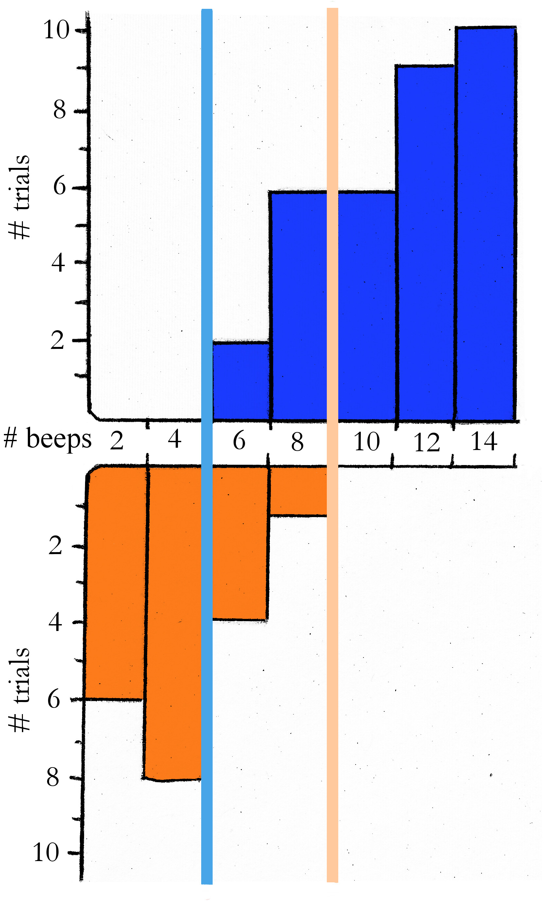
The graph I made above from Harry’s results was extremely helpful, since I can see the histogram of Harry’s responses to blue things as well as the histogram of her responses to not-blue things—all in one graph. (If it looks confusing, refer back to the graph I made in my first experiment.) It helped make clear just how many ways there are to interpret her beeping.
For instance, I saw that Harry always beeped less than 8 times in a second (marked by the orange line) on the not-blue trials. On the other hand, he always beeped more than 5 times a second (the blue line) on the blue trials. What each of these facts gives me is a certain rule, or criterion, for guessing what Harry saw just by counting his beeps: If Harry beeps more than 8 times in a second I can be fairly sure he must have seen something blue, and if he beeps less than 5 times a second he must have seen something not-blue.
But what happens if she beeps somewhere in between those two values? This is the region in the graph between the orange and blue lines—possibly the most revealing part of the graph—where Harry beeped about the same number of times when she saw either type of stimuli. How ambiguous of her! On the other hand, if I had a Neuron whose responses to two different types of stimuli had no overlapping region at all, then I’d be able to draw a line right down the middle of this graph to decode that Neuron’s beeps perfectly every time. (If I had found such a Neuron, believe me: Harry would be out of a job.)
Harry’s beeps may encode blueness, but these results made it clear that Harry might still occasionally beep a lot when there is nothing blue, or beep very little when there is something blue. This was going to be a problem if I wanted to put on a magic show where I pretended to be able to see blue things through walls. Magicians aren’t supposed to be magical on average, you know, they’re supposed to be magical all the time. According to my experiment’s results, if I heard Harry beep anywhere between 5 and 9 beeps I’d have no idea whether there was a blue sky outside or not.
I decided that 7 beeps in one second looked like a good criterion for deciding whether or not Harry had seen something blue. But how accurate was this criterion? And is it really the best criterion possible?* I knew that my stage name as a magician was going to be “The Man Who Speaks in Beeps”, but before I started putting up advertisements for my show I wanted to pick Harry’s blueness criterion more carefully.
* A criterion is called a magic beep count (or optimal spike count threshold) only when it is a better criterion than any other criterion. -WT
If I use 7 beeps per second as my criterion, then whenever Harry beeps more than that I’d guess that she saw something blue. If the stimulus really is blue then that guess is called a hit, because it’s a correct guess that a blue stimulus was present. On the other hand, if the stimulus wasn’t actually blue then my guess is called a false positive. Here’s a chart of all the possibilities:
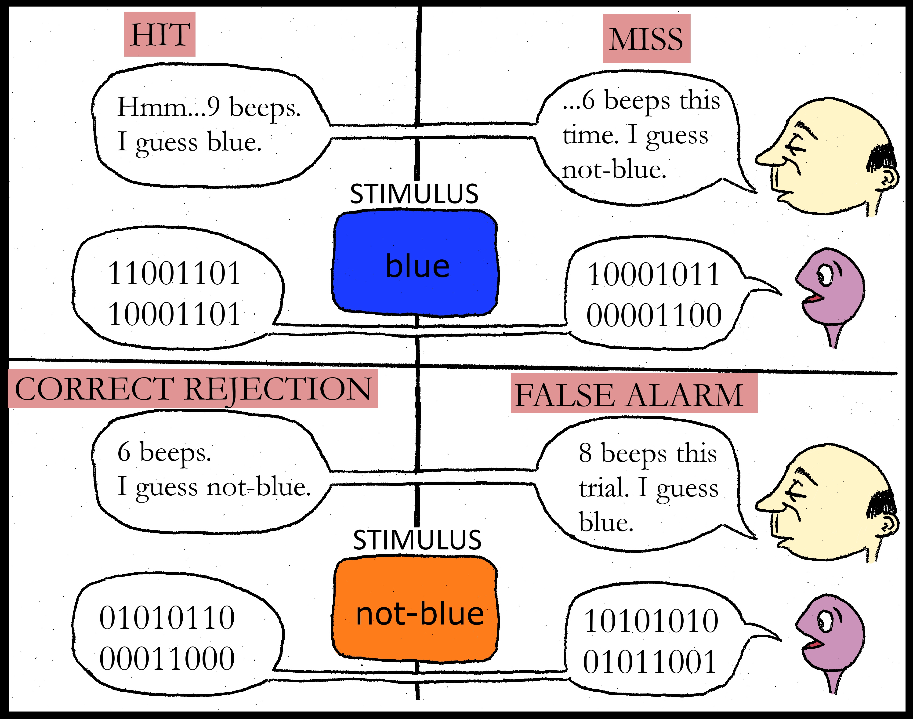
To test how good a certain criterion is you can use trials from the last experiment to guess the stimulus using only your Neuron’s beep count and the criterion. (The guessing rule: Did she beep more than the criterion? Blue. Less? Not-blue.) Now just count the number of times you got a hit, a miss, a correct rejection, and a false alarm.
To give a criterion an overall score, we just need to combine those counts into a single number, or rate. The accuracy rate is the number of times you guessed the stimulus correctly (i.e. a hit or a correct rejection) divided by the total number of trials. The hit rate is the number of times you guessed there was a blue stimulus divided by the number of times a blue stimulus was actually present. Below is a list of common rates you might consider calculating:
Different rates are useful depending on what’s most important. If I want to maximize the number of times my guess is correct, I’d use the criterion with the highest accuracy rate. Or if I just want my criterion to maximize the number of times that I can detect when Harry sees something blue, I’d pick the criterion that gives me the highest hit rate.
So the best criterion for decoding a stimulus using a Neuron’s beeps is only a few guessing-games away: Once you’ve chosen what’s most important to you, you just have to try out every criterion until you find the one that maximizes the right rate. [3]
If Harry ever wants to take a vacation from performing in my magic shows, I’d have to fire her and order more Neurons until I found another one whose beeps encode blueness. But instead of listening to a Neuron’s beeps to guess whether there is something blue present, what other options do I have?
I was considering just flipping a coin and guessing “blue” if the coin is heads and “not-blue” if it’s tails. (A coin might be a good alternative to a Neuron, I thought, because I wouldn’t have to feed a coin and give it shelter—plus they make a lot less noise.) But, as I have verified, a coin does not know anything about blueness and so a coin flip is not actually going to help me at all.
But a coin flip, being a completely unreliable signal for blueness, can give me a good worst-case scenario. If it’s equally likely for a stimulus to be blue or not-blue, then my accuracy rate in the long run when flipping a coin to guide my decisions would be 50%, and my incorrect rate would also be 50%. (Try it if you don’t believe me.) With this in mind, a Neuron is only going to be useful to me if he/she drastically outperforms a coin flip—e.g., if there is a criterion I can use with the Neuron to ensure that my accuracy rate will be well above 50% on average. Otherwise, the Neuron’s beeps are no better than a coin flip.
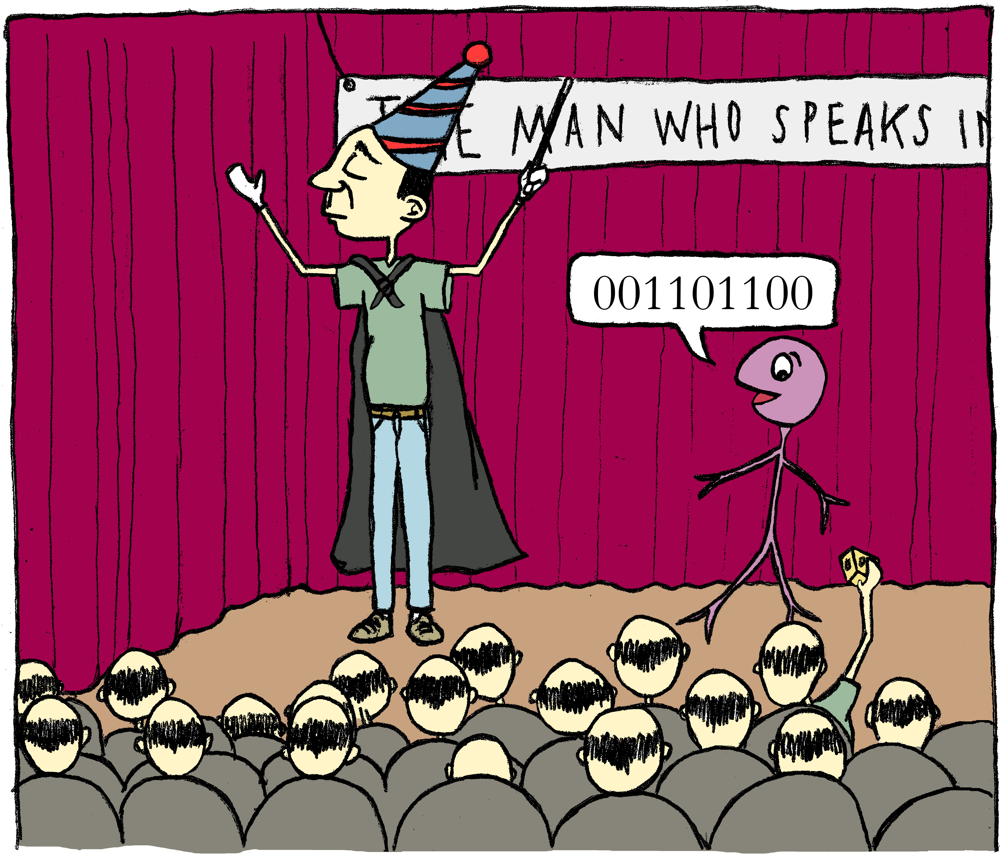
Because my miss rate using Harry was higher than zero, I knew that sometimes I was going to get some guesses wrong during my magic show no matter what criterion I chose. And unfortunately, after my first performance with Harry as “The Man Who Speaks in Beeps,” I definitely got the feeling my audience wasn’t that impressed with some of my mistakes.
By the end of the show though, I noticed a pattern in my audience’s booing: It was just the false alarm guesses (as opposed to incorrect guesses in general) that were making the audience skeptical of my supposed magical talents. I’d initially chosen a criterion for Harry’s beeps that maximized my proportion correct—the accuracy rate—but that night I realized I should’ve instead aimed to minimize my false alarm rate. In general, I’d learned that my criterion choice might need to vary from night to night depending on what would keep each audience happy.
But if I was going to be changing my criterion every night, what I now needed was some sort of assessment to give to Harry to find my performance overall at guessing blueness, rather than my hit rates and false alarms rates, which depend on the criterion I choose.
Luckily, I found in my textbook that one can measure how trustworthy a Neuron is at encoding stimuli (such as blueness) by finding something called its discrimination. This value gives you an idea about how well one could do at guessing the presence of a certain stimulus using the Neuron’s beep count and a range of different criterions. Since it’s a probability, just like the rates I calculated earlier, it can be anywhere between 0.0 (0%) and 1.0 (100%).
I went back to my experiment results and calculated H/(H+M) and FA/(FA+CR) for each trial—this gave me a hit rate (HR) and false alarm rate (FAR) at guessing blueness using each criterion. Then I graphed all of my results, with the FAR on the x-axis and the HR on the y-axis, so that each point on the plot was the false alarm rate and hit rate I got from using a certain criterion. The resulting graph is called an ROC curve*, and surprisingly enough, it is exactly the graph I need to find my Neuron’s discrimination.
* ROC (Receiver Operating Characteristic) analysis was first used by the United States army during World War II to assess the performance of their radars and radar operators. -WT
I was told, you see, that the secret to finding a Neuron’s discrimination is to take the area under his ROC curve. [4] Having learned to trust this odd graph, I calculated the area under Harry’s curve. It was 0.82, or 82%. This value is supposedly Harry’s discrimination probability for blue stimuli. But what does this really mean?
HARRY’S ROC CURVE FOR DISCRIMINATING BLUENESS 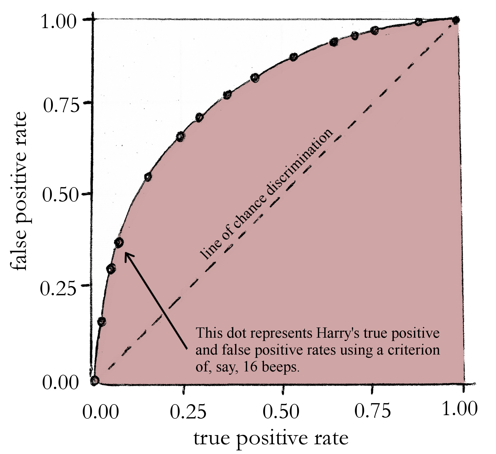
ME: To explain what a Neuron’s discrimination value means I won’t need to use any criterion at all. But first, I’m going to need a volunteer from the audience. Anyone? Anyone? Yes, you! The lovely little Neuron at the back, with the long dendrites.
The Neuron is actually Harry, pretending to be an audience member; she now walks up onto the stage.
HARRY: Hello.
ME: Welcome and hello; now what’s your discrimination at blueness?
HARRY: 82%.
ME: Lovely! Just perfect. Now you’re going to get to help me out with a little demonstration. I, The Magical Man Who Speaks in Beeps, am going to perform a magic trick. Stand right over there, Neuron, on the other side of the wall.
HARRY: Okay.
ME: Now, I’m going to close my eyes. [I turn to speak to the audience:] Audience, while my eyes are closed I want you to show this lovely little Neuron two stimuli—first one and then the other, one of them blue and one of them not blue—in either order that you choose. We’ll do this over and over again, and I think in the end you will all recognize the expected value of my magical powers. Ready?
AUDIENCE: Ready.
An audience member sitting in the front row shows Harry a yellow tennis ball (not-blue) and she beeps 6 times. Then he shows her a blue yo-yo and she beeps 8 times.
ME: Hmm…I guess that the first thing you showed was not blue, but the second one was blue.
AUDIENCE: Ooohhh…
I was correct!
The same audience member as before shows Harry a bit of twine (not-blue) and she flinches, then beeps 7 times. Then he shows her a block of blue cheese and she beeps 6 times.
ME: The first one was blue, the second one was not blue.
AUDIENCE: Ahhhhh….
I was wrong!
By the end of the show, after 600 repetitions of my experiment with the audience, I’ve guessed correctly 492 times and incorrectly 108 times. And it turns out (magically enough) that the percentage I guessed correctly was 82%, which is exactly the lovely little Neuron’s discrimination at blueness!
ME: Thank you, thank you, really it’s all just magic…
The audience stands and applauds politely. No hecklers tonight.
What a Neuron’s discrimination value represents in general, as the scene above demonstrates, is the probability that one can correctly guess which stimuli was which after hearing the Neuron’s responses. The great thing about this metric is that it doesn’t measure the proportion correct using just one criterion—rather, it rates one’s ability to distinguish between the stimuli using any criterion*. Dayan and Abbott call a measurement like this a “criterion-free metric.”
During my usual performances I prefer to choose a single criterion for the entire night of magic, rather than relying on the law of averages as I did in the little scene I showed you above. How I choose the criterion I use varies with each audience: Some nights an audience might be skeptical of false alarm guesses, so I’ll just choose the best criterion for that case; other nights the audience might prefer a high accuracy rate, and I’ll choose a different criterion. But most importantly, knowing Harry’s discrimination at decoding blueness allows me to grade her overall performance without regard to the criterion I choose to use on any given night.
Luckily for me, Neurons with other response fields and high discrimination values are good for all kinds of things besides just magic shows. I happened to find a Neuron who beeps a lot at really ripe tomatoes, and in fact I’m now growing a tomato plant in my backyard garden. Each day when I wake up I’d like to know if there’s a ripe tomato outside without having to look for myself. A false alarm would be a huge let-down, but a miss might mean the bugs get to the ripe tomato before I do. So I chose a criterion to minimize the sum of my Neuron’s false alarm rate and miss rate (i.e. the incorrect rate), and then that was it! All I have to do now is listen to my Neuron and wait…
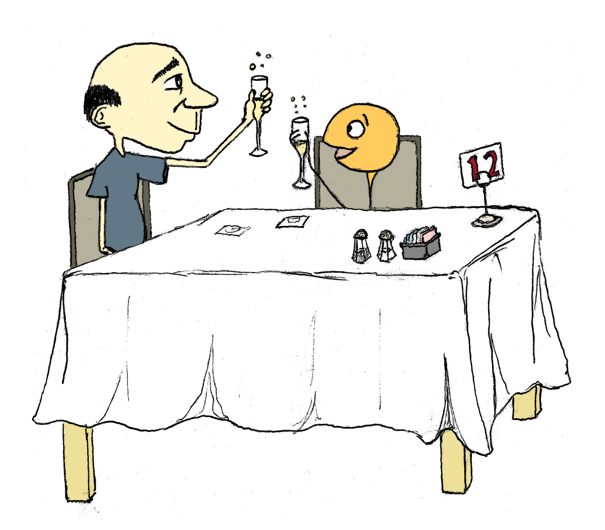
Getting to know my Neurons was tough, as it essentially required learning a new language. It’s forced me to reconsider what it really means to communicate and make decisions, as well as how difficult it can be to understand what someone else means. But perhaps more imporantly, it’s made me rich. “The Man Who Speaks in Beeps” is now an international sensation.*
* Considering our discussion in the Foreword, this is almost certainly untrue. -WT
Envelope and I, we’ve tried many different ways of understanding each other and they’ve all been helpful; when we go out to dinner now there aren’t so many awkward silences. As for Harry, we rarely go out to dinner because she doesn’t beep much at the restaurants I pick*. (She’s not much into socializing, anyway—she takes our magic performances very seriously and is trying valiantly to get her blueness discrimination up to 90% so we can take our show to Vegas.) But my ripe-tomato Neuron friend has been of no use to me yet. He hasn’t ever beeped above the criterion I chose for him: Still no ripe tomatoes in my garden, apparently.
* The author evidently noticed that if one finds a stimulus with the exact opposite of a Neuron’s response field, it will usually have an inhibitive effect on the Neuron, causing him or her to beep far less than average. At the time the author wrote this book in 2012, anti-broccoli did not yet exist. Orange restaurants, on the other hand, did. And so by taking his Neuron Harry to orange restaurants the author was finally able to answer his question “When will he stop [beeping]?” The answer: Show him an inhibitive stimulus. -WT
I hope that after reading all of this you’re feeling a little better about your Neuron friend and how to approach its endless beeping. So far I’ve explained how to find a Neuron’s response field, how to wear a rate coding hat, how to choose a criterion for decoding your Neuron’s beeps, and how to grade your Neuron’s overall helpfulness at discriminating between two different stimuli. But there are many more ways to find something of interest in your Neuron’s beeps. Most likely, no one’s even thought of the best ways yet.
Learning to understand a Neuron pet may be a handy skill, but there’s still a lot more we can aim for. After all, human consciousness itself may be nothing more than a collection of beeping Neurons, each one encoding some relevant part of our surroundings. If so much can be gained from listening to a single Neuron in isolation, just imagine the multitude of information gained from understanding a network of Neurons communicating with each other!*
Since I can easily tell when it’s cold enough outside to put on a scarf, something in my brain must know how to decode all the beeps of the relevant Neurons to give me my decision. Whether or not there’s really a magic beep count for discriminating things like coldness or scarf-time, it is certainly possible that only by the collective responses of my Neurons am I able to take a step outside and make any decision at all—most importantly, “Hey, I should put on my scarf.” Who knows?
* I encourage you to make a donation to the World Neuron Foundation, a non-profit organization dedicated to the extraction, herding, and domestication of wild Neuron networks. -WT